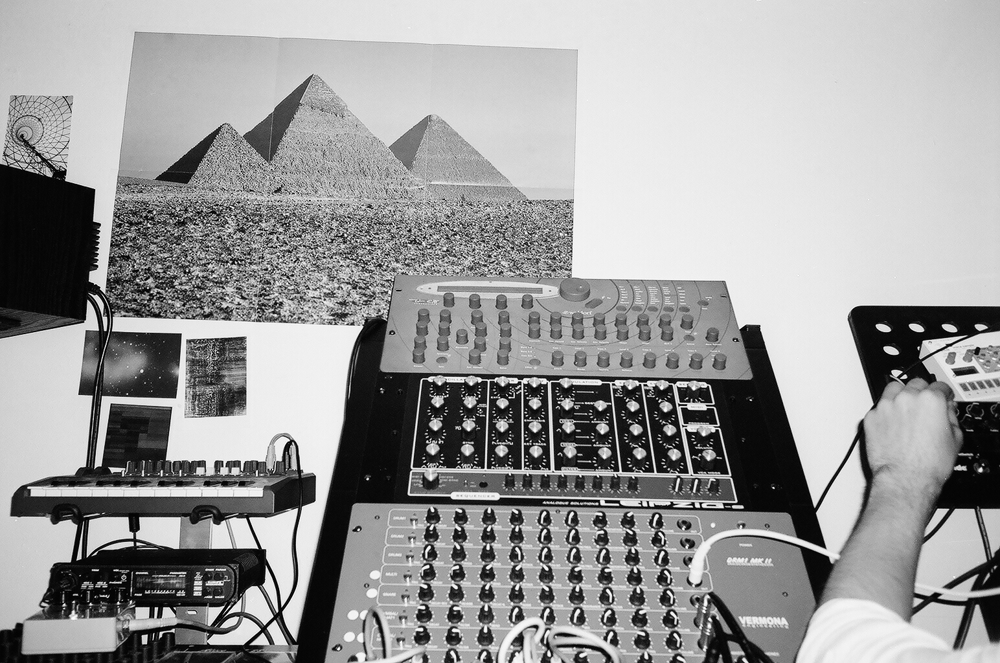

Back
Oswaldo III
Producer
Cyprus
"...contemplation is not techno-aesthetics’ primary category. It’s in usage, in action, that it becomes something orgasmic, a tactile means and motor of stimulation. When a nut that is stuck becomes unstuck, one experiences a motoric pleasure, a certain instrumentalized joy, a communication--mediated by the tool--with the thing on which the tool is working. [...] It’s a type of intuition that’s perceptive-motoric and sensorial. The body of the operator gives and receives. Even a machine like the lathe or the milling machine produces this particular sensation. There exists an entire sensorial array of tools of all kinds."
Other Aliases; Emiddio Vasquez
